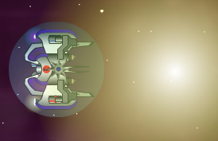
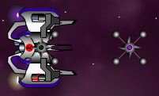
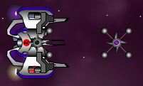

| Starfighter: Disputed Galaxy, Alien Mines | ||||||||||||||||||||||||||||||||||||||||||||||||||||||||||||||||||||||||||||||||||||||||||||||||||||||||||||||||||||||||||||||||||||||||||||||||||||||
|
Alien Mines
01. HE Proximity Mine How to read the Mine Tables Each weapon is rated in its damage, targeting radius, blast radius, arming time, duration, and for its ammunition. Two factors do not receive ratings, arming time and duration. Each rating is from A+ (best) to F (worst) except for damage, which is both a numerical rating and a rating, and ammunition, which is both a number for the number of shots and a rating.
Damage: This is a rough estimation of the amount of Shield damage this Mine will do on a successful hit, and a grade for that damage. The higher the damage, the higher the grade. Two pictures are included for most of the Mines. The first picture depicts the Mine when it is not armed. The second picture depicts the Mine when it is armed. HE Proximity Mine
Cons: Target has to hit this Mine to get the benefit of it How to use it: Think of a good, basic mine and the HE Proximity Mine is it. Despite the "proximity" tag in the name, this Mine won't actually explode if your enemies get close to it. They have to hit it. That's reasonably easy to do, as this Mine is of a good basic size and arms very quickly after release from your ship. It also has a very long duration. Best of all, this Mine does some of the best damage of any Mine in the game and has a very good blast radius. The relatively large load you receive when you use this mine -- eight of them -- means that you're going to have a good number of them to use in combat, too. Really, this Mine has no major disadvantages other than its average size. Your target has to hit this Mine in order for it to work. Every other Mine in the game adds at least some layer of specialization making it more likely that this is going to happen, but you sacrifice something with each of the other Mines in exchange for the boons you receive for that Mine. The HE Proximity Mine is therefore the generalist Mine in the game. Good damage, good blast radius, decent likelihood that you'll hit your targets with them, particularly if you use them against AIs in the early game. Don't expect anything special from this Mine, and you won't be disappointed. Back to topThunder Bolt Mine
Cons: High likelihood that it's going to hit you or your allies as well! How to use it: In my opinion, the Thunder Bolt Mine is the best Mine weapon in the game. It comes with a tremendous number of advantages, but it comes with a tremendous number of disadvantages as well. So, you have to be very careful when you use it, but once you learn how to use it, you'll find it to be one of the most useful weapons in the game. First and foremost, it's impossible to discuss the Thunder Bolt Mine without considering its damage. It does between 125 and 140 damage, spread among multiple targets, over a period of about five to six seconds. Against multiple opponents, this would be bad enough, but against a single opponent, this amount of damage is crushing. You'll find it particularly useful to drop two Thunder Bolt Mines on either side of an Atlas or a Medusa. Drop them, run, and return 10 to 12 seconds later, and if the Atlas or Medusa has not itself run, you'll find these very tough targets have had their Shields reduced to near-nothing, making it trivial to finish them off. Even better, the targeting and blast radii of the Thunder Bolt Mines is among the best in the game. If you put this Mine anywhere near an enemy ship, that ship is going to take at least some damage, and if you use them wisely, they'll take a lot of damage. The terrific news is that you get two of these Mines. That's more than sufficient for most uses. Of course, the downsides to this Mine are also many. Unless you're moving at very high speed when you drop the Thunder Bolt Mine, you're going to find yourself under attack from your own weapon! The targeting radius of this Mine is so wide that it is very easy to hurt or kill yourself with it. The Mine's duration is set by either how much damage it has done or its duration (about ten seconds). It is very easy to watch your status bar and be told that your Thunder Bolt has killed something, or multiple somethings, and then want to go in and claim the bonus drops... only to have your Thunder Bolt Mines do their level best to kill you when you try. As a result, Thunder Bolt Mines have to be used very carefully. Back to topStealth Mine
Cons: Shorter than average duration, narrower than average blast radius How to use it: The Stealth Mine is one of the most powerful Mines in Starfighter, doing an average of 80 Shield damage per strike. Even better, its hidden qualities (it uses the equivalent of a LBSS to cloak itself one second or so after launch) make it likely that it will hit the targets you aim it at. Despite the fact that launching this Mine uses the same sound effect of other Mines, unless your opponent is right on top of you, they will probably not associate the Mine launch with you. Particularly at high speed, the Stealth Mine is really hard to spot. In addition, AI opponents appear not to even try to avoid the Stealth Mine; it seems they have been programed to fail to notice it, which is nice. ;-) The downsides to the Stealth Mine are its smaller than average blast radius and average ammunition. It's also got a lower than average duration (about 15 seconds), which is going to make it less helpful to use in minefields. This is quite a shame because if there was ever a mine that wanted to be in a large minefield, it was the Stealth Mine! If you're particularly lucky or skillful, you still might get away with it, so don't let me tell you it isn't possible. The amount of ammuntion means that you're going to be frequently out of these mines, particularly if you use them against pursuers. Back to topPlasma Mine
Cons: Relatively small size and bright color means they probably won't hit the target, small blast radius How to use it: The Plasma Mine is an alien-only Mine weapon, and it's a great idea. It costs 20% Energy, and as long as your Energy holds out, you can drop as many of them as you want. They do great damage, averaging 70 to 80 Shield damage per strike, and if you can drop a large number of them (on a Defense Turret, say, or an Atlas), you can fairly easily take out these large targets using Plasma Mines alone. The arming time is two seconds, which is sufficient time to get out of their way, but the duration of these mines is fairly short, at about 15 seconds. This means that they're going to be very hard to use in minefields, which is probably a balancing factor. With one Energy Cell, you could lay 15 to 18 of these in short order, so thankfully, the first ones will be detonating as you're laying the last ones. The major downsides to the Plasma Mine are its small blast radius and the bright white color of the Mine once it's armed. It looks like a small sun on the map and will be impossible for humans in Multiplayer sectors to miss. As a result, your chances of hitting a target with any given Plasma Mine are pretty small in Multiplayer sectors. They're also not as useful dropped against pursuers for this reason, both because of the long arming time and because they will be easy to spot and avoid. Still, you have to appreciate a Mine that you can theoretically deploy an infinite number of. Against large AI opponents, the Plasma Mine is devastating, and highly recommended. Back to topXHE Time Mine
Cons: Useless for a minefield, useless tactically  How to use it: The XHE Time Mine is yet another specialized Mine with a specific use for which it is specifically designed. That use is against ships in close pursuit of you, preferably at high speed. This is certainly the primary use for Mines, so this is no bad thing. But this is the only use to which XHE Time Mines can be put. The good news is that the damage these mines do is pretty good, at an average 45 Shield damage per strike. Even better, the blast radius of this Mine is one of the best in Starfighter. The included graphic demonstrates this; you will do damage to everything within at least a 150 distance radius. This makes it particularly useful if you're being pursued by a large number of ships. The downside, of course, is that there are more damaging Mines in the game. Fortunately, ammunition is pretty good, at 7 mines. This will allow you to do good damage against a large group of pursuers, particularly if the group stays fairly close to each other. The fact that the XHE Time Mine will detonate regardless of what is around it of course makes this Mine useless for minefields. In addition, the large blast radius makes it likely that if you're not using this Mine at speed, you will be caught in the blast as well. Make sure you're on the run when you fire these! Think of them as grenades that you throw behind you as you run and you'll do pretty well. Back to topElectro Magnetic Pulse Bomb
Cons: Does no damage, only average blast radius How to use it: The Electro Magnetic Pulse Bomb is the most difficult Mine to use in Starfighter. It is highly specialized, and does no damage to the targets that strike it. Instead, they are affected by an EMP effect, shutting down their power for between five and nine seconds. The EMP Bomb is larger than the average Mine, which makes it somewhat harder to avoid. It also has a good blast radius and will affect multiple ships if they are within about 100 distance of the point of detonation. Ammunition is also excellent! You receive 10 EMP Bombs, which allows you to use a large number of them without having to worry too much about running out of them. In particular, if you use these Mines in concert with either Gravity Mines or Heat Seeking Mines (assuming your ship has multiple Mine slots), you can do very good damage to disabled opponents. The tricky part of these Mines is using them well, and once you have used them, taking advantage of the chaos that you cause with them. It is all too easy, if you don't give the EMP Bomb a wide enough berth, for you to affect yourself in the EMP effect along with your enemies. Particularly when using these Mines against pursuing ships, how do you tell whether or not they've been affected? Unless you have sharp eyes to notice the characteristic EMP rotations on radar or unless your enemy is close to you when the EMP Bomb strikes them, you won't know that they are drifting helplessly. Even worse, your enemies are likely to be pursuing you at high speed, which is going to make swinging in behind them and taking advantage of their helpless condition a little more difficult. If the EMP Bomb had a longer duration, it would be more useful for minefields, but the duration is only 15 seconds, which is going to make this harder. There's no question that the EMP Bomb is among the more useful Mines in the game, but it takes a lot of patience, persistence, and practice to use them well. Many Starfighter players won't have the patience for it... Back to topGravity Mine
Cons: Lower than average damage, low ammunition How to use it: The Gravity Mine is an excellent choice if you're looking for a Mine either to use against pursuers or to lay in large minefields. The Gravity Mine will exert a drag on nearby ships, pulling them toward the Mine, and the effect of large numbers Gravity Mines set fairly close together will stack, creating an almost undeniable force against ships trying to escape them. Each Gravity Mine will neutralize the equivalent of about speed 4. So four of them in close formation is sufficient to drag just about any ship in Starfighter into the field. The blast radius of the Gravity mine is also pretty good; this same close formation of mines will do a good job of damaging an ambush of AI opponents, for instance. The duration of the Mines is also very good, at 20 seconds before they will spontaneously explode. However, despite the high likelihood that the Gravity Mines will hit their targets, there are several disadvantages to this Mine. First and foremost, the damage of Gravity Mines is lower than average, doing an average of about 40 Shield damage per strike. This would be acceptable if you received more of them, but you only receive 5. This is sufficient to attack small AI ambushes with, or annoy larger ships, but not enough to truly cripple those attacked by these Mines. Probably because of their nature, Gravity Mines also have a larger than average arming time, about three seconds. That means that if you're using these Mines against pursuers, it is possible for them to defeat these Mines by getting closer to you. If your enemies are close enough, the Gravity Mines will not have time to arm and will do them no harm whatsoever. Back to topMicro Photon Compression Bomb
Cons: Unlikely to hit anything except an immobile target How to use it: The Micro Photon Compression Bomb does the single most damage of any weapon, of any type, in the game. It does so much damage, in fact, that it's hard to measure how much damage it's actually doing. It will destroy any single target in the game, and has an extremely wide blast radius. That means it's doing at least 400 Shield damage when it explodes. It is particularly good at destroying Defense Turrets. A MPCB left anywhere near a Defense Turret will obliterate it. Unfortunately though, the blast radius isn't quite good enough to destroy all four Defense Turrets in an enemy Station. The MPCB has extensive disadvantages to go with its advantages, however. First and foremost, the arming duration is incredibly long: 15 seconds. This means that any ship that can so much as drift will escape the blast. Any ship that sees an armed Micro Photon Compression Bomb will give it a wide berth, and the long arming time means that it is useless to drop into your wake when you're being pursued. These factors make this Mine useless against any target except enemy Defense Turrets. That would be acceptable if you received more than one, but you don't. That factor makes this Mine useless against both enemy Stations and Defense Turret Clearance missions where multiple turrets are involved. This is unfortunate, because it's tailor made for such missions! In short, you can only use this Mine for one thing: to destroy a single enemy Defense Turret. That isn't sufficiently good reason to carry one, and as a result, this Mine should not be used. Even if you want to camp in a sector with an enemy Substation, just about any other mine will be just as useful to help destroy the Defense Turret and will be more useful to you once the turret is gone. Back to topHeat Seeking Mine
Cons: Low ammuntion How to use it: The Heat Seeking Mine is unique among the Mine weapons in that it actually moves. It will guide itself toward nearby targets, whether enemies or allies, at about speed 5. This is slower than any ship in the game, but it will prevent enemies from using stationary tactics around you. It is also one of the most useful Mines when firing it at ships pursuing you. You don't have to be particularly precise; just drop these Mines into your wake and if the ship pursuing you isn't careful, the Heat Seeking Mine will wander right into their flight path of their own accord. Damage from the Heat Seeking Mine is better than average, at an average of 75 damage to the Shields of the target it hits. The duration of these Mines is also excellent, at 20 seconds, making it one of the most useful Mines to use in a static minefield or trap. The mines are much larger than average, but this is actually an advantage: it makes it much more likely that the HS Mines will hit a target. The only real disadvantage to these mines is the ammunition stocks; you only receive 5 of them. There also one less-important disadvantage: these Mines look ridiculous when they're attached to the hull of your ship. ;-) Back to top
| ||||||||||||||||||||||||||||||||||||||||||||||||||||||||||||||||||||||||||||||||||||||||||||||||||||||||||||||||||||||||||||||||||||||||||||||||||||||
 
